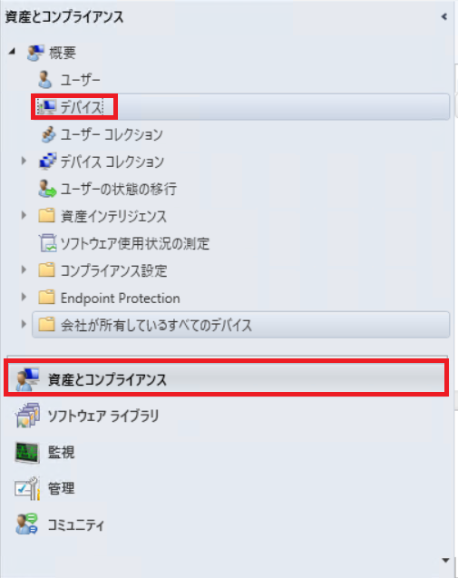
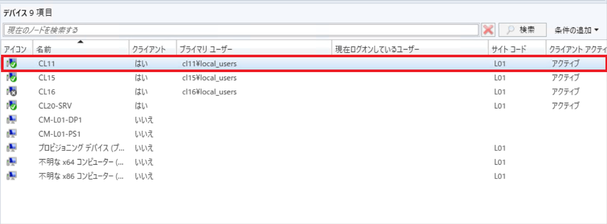
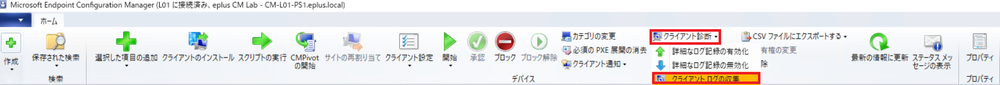
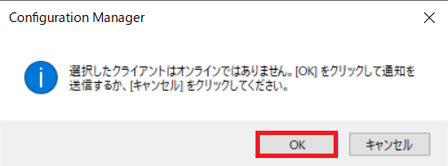
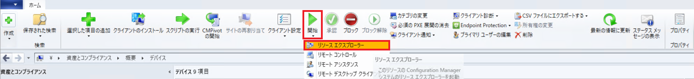
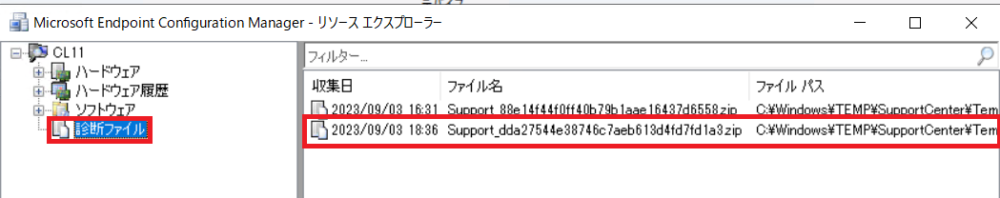
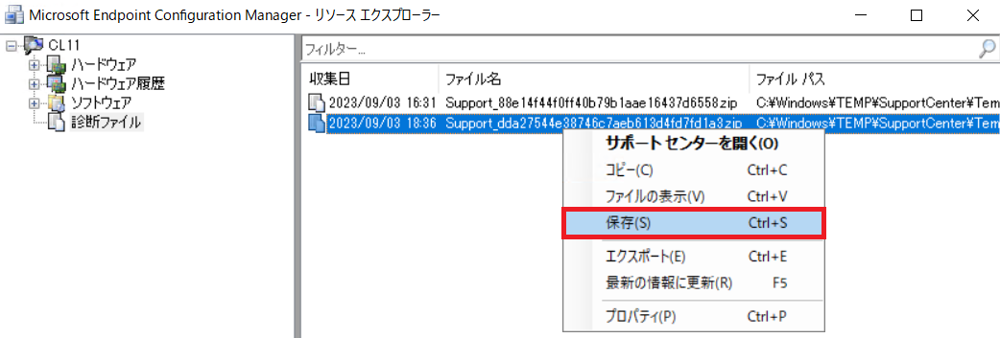

Configuration Manager エージェント資料のリモート採取手順について
エンドユーザー 様が事象発生端末を利用中であるなどの理由で、お客様が直接 Confingration Manager (ConfigMgr) クライアント ログを採取できない場合、該当の端末が ConfigMgr コンソール上 表示されていれば、リモートからログ資料を採取出来ます。
CMCollector より採取される内容が限られますが、ある程度の内容は調査可能ですので、リモートからの採取しか出来ない場合は一旦こちらの手順にて資料採取し弊社までお寄せくださいますようお願い致します。
採取情報
以下の資料が採取されます。
- C:\Windows\ccmsetup\Logs フォルダー 配下の内容
- C:\Windows\ccm\Logs フォルダー 配下の内容
- 一部 WMI レポジトリ情報
- Win32_ComputerSystem
- Win32_OperatingSystem
- Win32_Service
採取手順
- [ConfigMgr コンソール] - [資産とコンプライアンス] - [概要] - [デバイス] を開きます。
 - 資料採取対象の デバイス を選択します。
 - [クライアント診断] - [クライアント ログの収集]を実行します。同内容は対象 デバイス を右クリックしても表示可能です。
 - 以下の ダイアログ が表示されますので、[OK] を選択します。

※端末がオフラインの場合は以下が表示されます。いずれにせよ [OK] を選択します。
 - 資料採取されるまで待ちます。デバイス 状態が オンライン であれば比較的早めに収集されますが、デバイス 状態 がオフライン の場合は、オンラインになってから 資料が採取されます。
- [ConfigMgr コンソール] - [資産とコンプライアンス] - [概要] - [デバイス] 画面を表示します。
- [クライアント ログの収集]を実施していた デバイス を選択し、[開始] - [リソース エクスプローラー] を開きます。同内容は対象 デバイス を右クリックしても表示可能です。
 - [診断ファイル] に 最新の日付で レコード が登録されているのを確認します。
 - 該当のレコードを右クリックし、「保存」をクリックし、格納場所を選択します。
 - 「Support_」で始まる文字列の zip 拡張子ファイルを弊社までお寄せください。